8ª Semana de Tecnologia · Senac Maringá · 21.05.2026
Carreira em
tecnologia
tecnologia
não é uma
linha reta.
linha reta.
IA · Visão Computacional
Engenharia de Software · Construção de Repertório
Engenharia de Software · Construção de Repertório
Bruno Pinha
Engenheiro de Software · Pesquisador · Empreendedor
Eletrônica.
Delphi & Legados.
Sistemas corporativos.
Gestão de Projetos.
Empreendedorismo.
Mestrado.
Visão computacional.
IA Aplicada.
Docência.
a pergunta que guia esta palestra
O que conecta
tudo isso?
tudo isso?
"Minha carreira não foi definida
pelas linguagens que dominei,
mas pelos problemas
que aprendi a resolver."
pelas linguagens que dominei,
mas pelos problemas
que aprendi a resolver."
Bruno Pinha
a metáfora central
Carreira como
stack profissional
stack profissional
Assim como um sistema tem camadas, uma carreira também tem. O que aparece é o topo. O que sustenta está embaixo.
01Eletrônica e mundo físicobase
02Programação e sistemas reais
03Arquitetura e sistemas legados
04Gestão de projetos e pessoas
05Empreendedorismo
06Pesquisa acadêmica
07IA · Visão Computacional · PesoCamagora
01
camada 01 · a base
Eletrônica e
mundo físico.
mundo físico.
Antes de ser programador, projetista eletrônico. Sistemas embarcados, circuitos, sensores, comunicação física — a camada que ensina como o software encontra o mundo real.
"Software não existe no mundo ideal. Ele roda em hardware que falha, sensores que mentem, ambiente que muda."
sensoresembarcadossinal & ruído
02
camada 02 · sistemas reais
Programação
que sustenta cidades.
que sustenta cidades.
Muitos anos em Delphi. Sistemas de planejamento orçamentário municipal, gestão pública, regras fiscais e tributárias — código que precisava funcionar no dia seguinte porque uma cidade inteira dependia dele.
"Programar ali não era escrever código bonito. Era traduzir realidade burocrática e legal em sistemas confiáveis."
delphisetor públicocontexto · risco · consequência
03
camada 03 · arquitetura
Modernizar o que
não pode parar.
não pode parar.
Especialização em modernização de sistemas legados — décadas de regra de negócio em código que ninguém documentou. Entender, preservar, refatorar, integrar e evoluir sem parar a operação.
"É um dos trabalhos mais complexos da engenharia de software. Não é só reescrever — é preservar conhecimento que vive no código."
arquiteturalegadoscoderswise
04
camada 04 · pessoas e projetos
O código é fácil.
O resto é difícil.
O resto é difícil.
Gerente de software, gerente de projetos, gestor de TI. Os problemas mais difíceis de um projeto raramente são técnicos — são de comunicação, escopo, expectativa, equipe e prazo.
"Esses problemas não se resolvem com tecnologia. Se resolvem com clareza, conversa, decisão e responsabilidade."
liderançaescopo · prazo · riscocomunicação
05
camada 05 · risco e execução
Empreender é
aprender no concreto.
aprender no concreto.
Macro Informática — escola que formou 500+ alunos antes do YouTube esvaziar o modelo. Depois Conmarket — minimercados autônomos com PDV desenvolvido internamente, operados de verdade entre 2020 e 2024.
"Uma boa solução técnica não se sustenta sem dor real, cliente disposto a pagar e modelo de execução que funcione."
macro informáticaconmarketproduto · operação
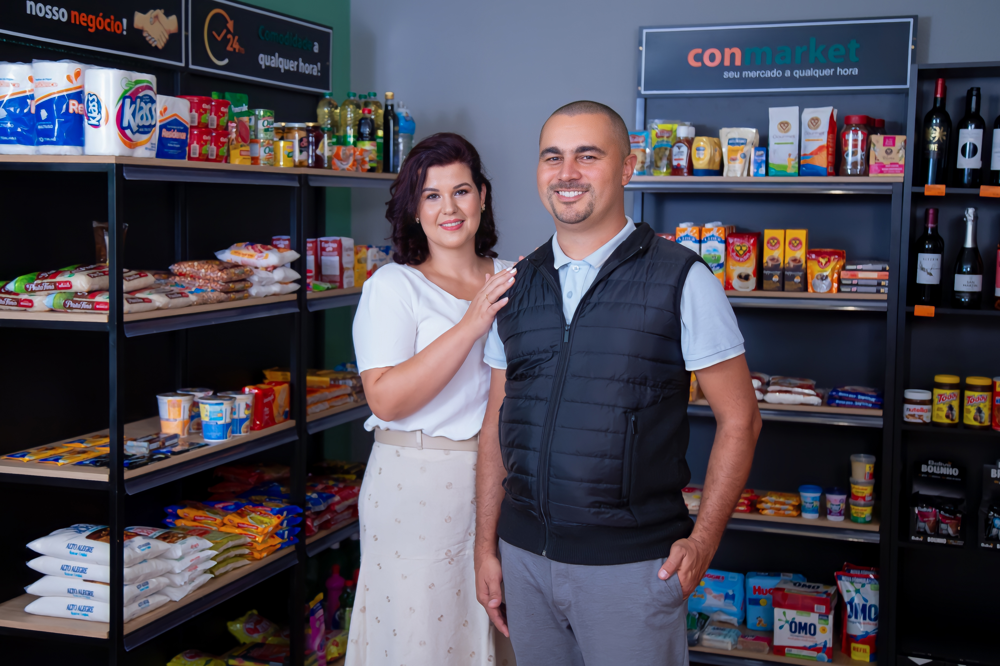
// conmarket · minimercados autônomos · 2020–2024
06
camada 06 · pesquisa
Voltar à academia
depois de 20 anos.
depois de 20 anos.
Mestrando em Ciência da Computação pela UEM, com pesquisa vinculada a visão computacional aplicada ao PesoCam. A prática mostra onde dói. A pesquisa ajuda a provar, estruturar e validar.
"Academia e mercado não são inimigos. Anos de prática tornam o retorno à academia muito mais denso."
uemvisão computacionalengenharia de software
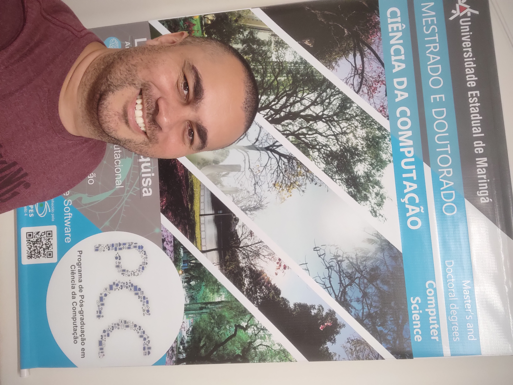
// primeiro dia · uem · ppg-cc
07
camada 07 · convergência
PesoCam.
O repertório
vira projeto.
O repertório
vira projeto.
Estimativa de peso bovino sem contato físico — câmera 3D, IA em borda, pecuária de precisão. O projeto que mais exigiu de mim, porque pediu todas as camadas anteriores ao mesmo tempo.
"Ele não nasceu de um insight genial. Ele nasceu do repertório acumulado."
visão computacionalia · bordaagrotech
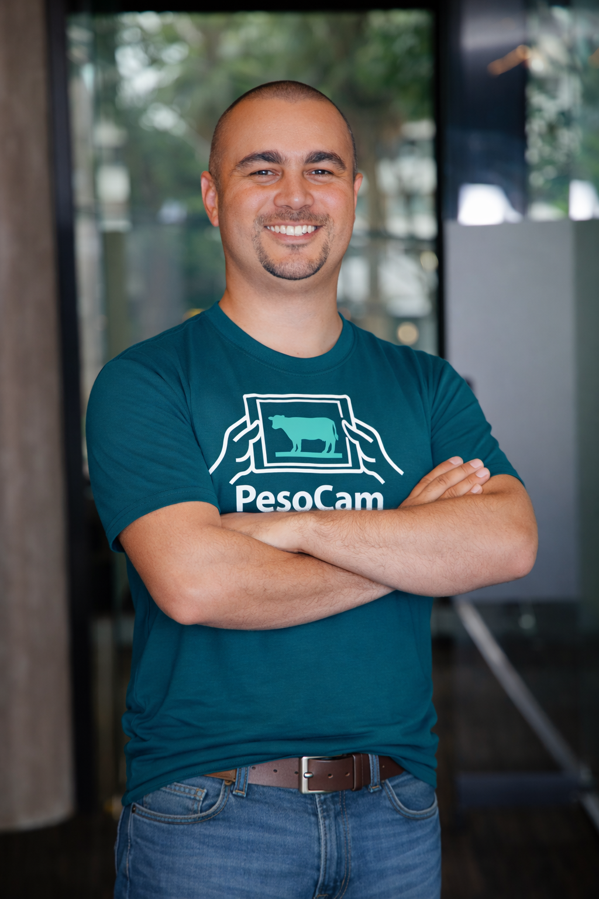
// fundador · pesocam
bloco 3 · o problema real
Peso é uma
variável central
na pecuária.
variável central
na pecuária.
Define valor de venda, dosagem de remédio, ração, momento de abate. Hoje a aferição depende de balança física — contenção, curral, mão de obra, deslocamento.
"E o estresse da contenção, por si só, já afeta o peso aferido."
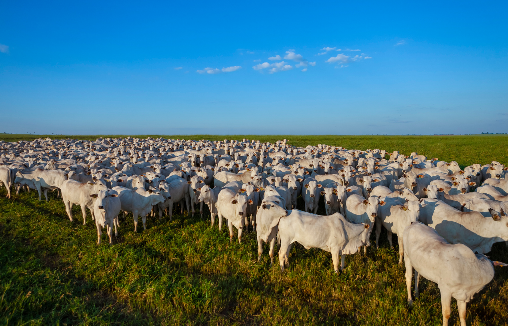
?
"E se fosse possível
estimar o peso
de um bovino
sem contato físico?"
estimar o peso
de um bovino
sem contato físico?"
// visão computacional · profundidade 3D · IA · campo
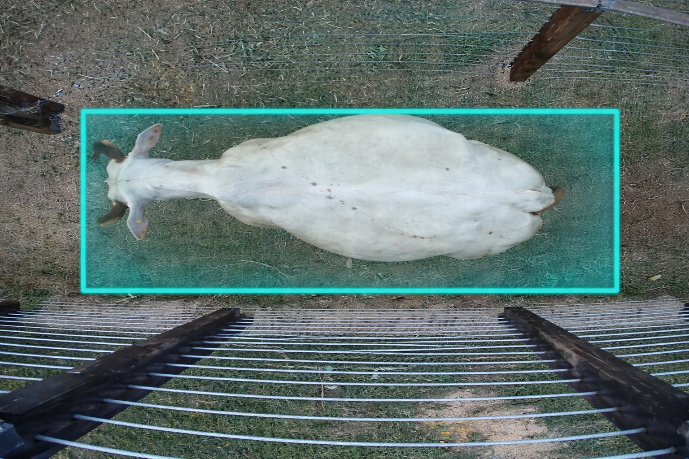
arquitetura da hipótese
Pipeline: câmera → borda → IA → estimativa
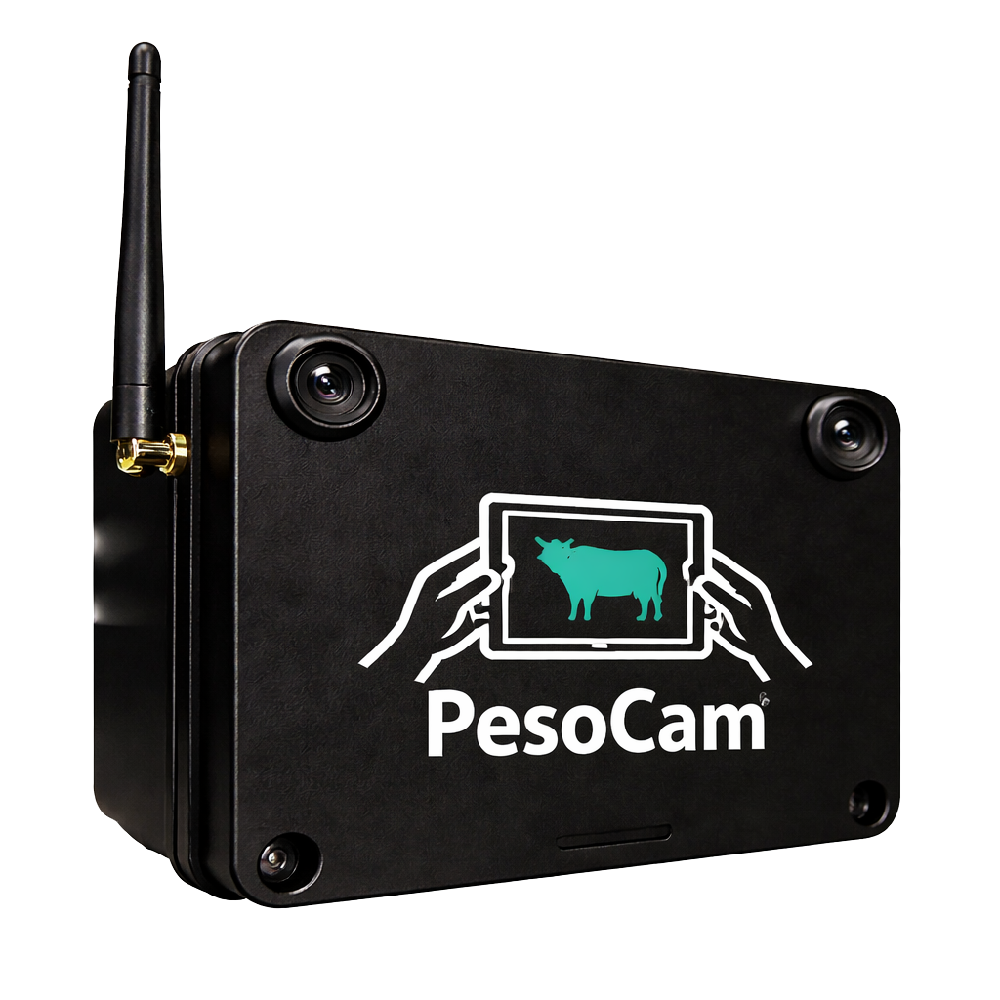
// mvp · pesocam
01 · captura
Câmera 3D
OAK-D-Pro-W (Luxonis): RGB + mapa de profundidade do animal em movimento.
02 · borda
Processamento local
Pipeline embarcado, sem internet. Pré-processamento, segmentação, extração de features.
03 · modelo
IA estima peso
Modelo treinado com pares (imagem 3D, peso de balança) coletados em campo.
04 · resultado
Peso para o produtor
Estimativa entregue na hora. Sem contato, sem contenção, sem deslocamento.
// edge ai · sem nuvem · sem latência · sem dependência
parece simples — não é
A realidade do campo é o que faz o problema existir.
01
Animal em movimento
Captura precisa exigida mesmo sem cooperação do sujeito. Enquadramento nunca é perfeito.
02
Iluminação imprevisível
Sol direto, sombra, entardecer, contraluz. Variação severa que o modelo precisa absorver.
03
Ambiente hostil
Poeira, lama, vibração, temperatura. Hardware em condições que não perdoam projeto frágil.
04
Dataset não existe
Cada par (3D, peso) precisa ser coletado em campo, com animal real, balança de referência, anotação manual.
05
Erro tem consequência
A margem não é acadêmica — o produtor toma decisão econômica com o número que sai da estimativa.
06
Conectividade limitada
Operação a quilômetros da cidade. Solução obrigada a funcionar sem internet — edge AI de verdade.
"O produtor precisa de um número confiável o suficiente para tomar uma decisão econômica. Isso é responsabilidade real."
arquitetura do projeto
PesoCam cruza nove domínios simultâneos.
01
Hardware
eletrônica · embarcado
02
Câmera 3D
RGB · profundidade
03
Engenharia de software
pipeline · arquitetura
04
Inteligência artificial
modelos · treinamento
05
Pesquisa acadêmica
uem · método
06
Validação de dados
campo · referência
07
Mercado
pecuária · dor real
08
Produto
uso · operação
09
Fomento internacional
gdin · coreia
"Isolados, esses domínios não formam
um produto. É a engenharia que os conecta."
um produto. É a engenharia que os conecta."
A IA estima.
A câmera captura.
O algoritmo calcula.
Mas é a engenharia que transforma
tudo isso em produto confiável.
tudo isso em produto confiável.
— o que eu acredito sobre inovação
validações externas
O projeto que o mercado e a academia reconheceram.
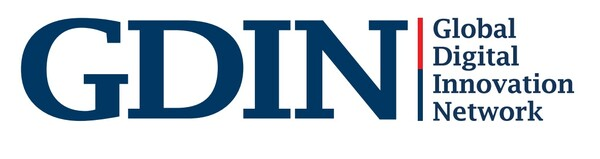
GDIN 2026
AI & Digital Transformation Global PoC Support Program — ecossistema coreano de inovação. Interlocução direta com empresas do mercado agrotech.
coreia do sul
Korean Valley Ivaiporã
Incubação em Agrotech no contexto do programa Korean Valley — operação e mentoria de longo prazo.
ivaiporã · pr
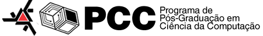
UEM · Mestrado
Programa de Pós-Graduação em Ciência da Computação — visão computacional e engenharia de software aplicada ao PesoCam.
maringá · pr
"Não vieram do nada. Vieram de projeto real, exposição e consistência."
posição
IA amplifica entendimento.
Ela não cria entendimento.
Ela não cria entendimento.
// uso real
Estruturar ideias. Pesquisar alternativas. Gerar documentação. Comparar abordagens. Revisar textos. Acelerar o raciocínio. Ferramenta poderosa que eu não abro mão.
// vibe coding
Descrever, IA gera, aceitar sem ler. Parece produtividade — na verdade é acúmulo de dívida técnica que vai cobrar juros depois.
"O diferencial não vai ser saber usar o prompt. Vai ser saber formular o problema, avaliar a resposta, decidir e assumir a responsabilidade."
princípios que guiam a prática
Quatro princípios.
Não negociáveis.
Não negociáveis.
01
Não terceirizamos entendimento
A IA acelera quem entende. Quem não entende, a IA acelera o erro.
02
Arquitetura sustenta,
não adorna
não adorna
Decisões estruturais existem para suportar evolução, não para impressionar.
03
Automação não substitui responsabilidade
Quem assina pelo resultado continua sendo o engenheiro — sempre.
04
Software sério não nasce de improviso
Velocidade vem de fundamentos. Improviso só funciona em código descartável.
para vocês, agora
Os quatro pilares
que sustentam tudo.
que sustentam tudo.
01
Fundamentos
Algoritmos, dados, redes, sistemas. Não tem atalho. Tudo o que vier por cima depende disso.
02
Projetos reais
Qualquer problema do seu entorno serve. Documenta. Publica. A perfeição é inimiga do começo.
03
Comunicação
Escrever, apresentar, conversar com não-técnico. Vale tanto quanto a habilidade técnica.
04
Resiliência
A carreira é longa. Vai ter erro, troca de área, recomeço. Quem fica é quem aguenta o ciclo.
como as oportunidades realmente aparecem
Networking é construir confiança
antes da oportunidade existir.
antes da oportunidade existir.
Participar de eventos como esse. Conversar com professor depois da aula.
Documentar o que aprende. Publicar projeto — mesmo imperfeito.
Participar de comunidades. Aparecer mais de uma vez.
Pedir feedback. Mostrar que está construindo, não só consumindo.
Aceitar desafio antes de se sentir 100% pronto.
Manter consistência ao longo do tempo. O resto é consequência.
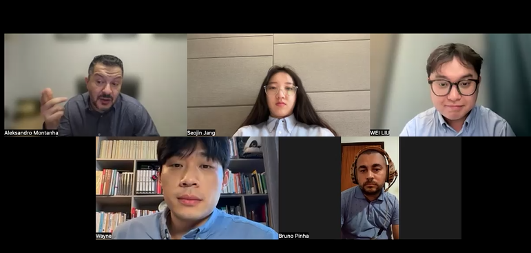
// evidência · reunião DeepFarm.net · Coreia do Sul
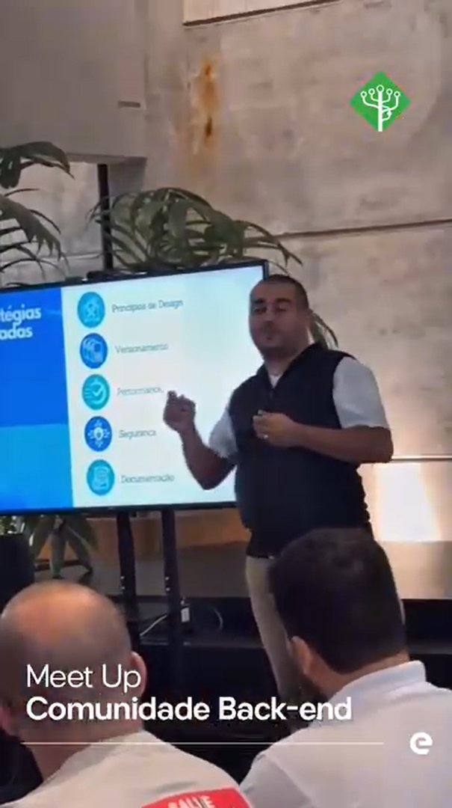
próxima camada
Ensinar é também
uma forma de aprender.
uma forma de aprender.
Próximo semestre: ingresso no corpo docente da Unicesumar. Não é ruptura — é mais uma camada. 20 anos de prática viram repertório que vale ser formalizado, compartilhado e questionado.
"Vocês, na plateia, são o motivo dessa próxima camada."
callback da abertura
"Não foi definida pelas linguagens que dominei,
mas pelos problemas que aprendi a resolver."
mas pelos problemas que aprendi a resolver."
Não despreze
nenhuma fase
da sua jornada.
nenhuma fase
da sua jornada.
site
brunopinha.com
linkedin
/in/brunopinha7
whatsapp
(44) 99185-7884
e-mail
brunopinha@msn.com
scan → whatsapp
fundador